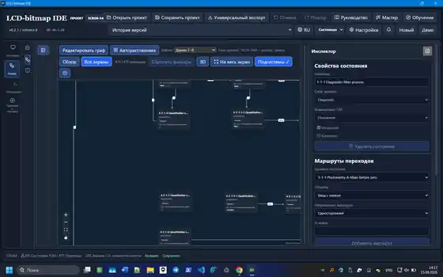

Instrument software
Protocol and hardware abstraction, canonical instrument state, measurement engines and operator workflows for laboratory instruments.
SCIENTIFIC SOFTWARE · INSTRUMENTATION · VALIDATION
I design scientific and laboratory software where measurement physics, embedded behaviour, operator workflows and verification evidence must agree. My work spans instrument control, HMI/FSM engineering, test evidence, technical documentation and controlled automation.

WHAT I BUILD
I work across the boundaries that often break scientific software: physical measurement constraints, serial protocols, embedded state, operator actions, validation criteria and traceable engineering evidence.
Protocol and hardware abstraction, canonical instrument state, measurement engines and operator workflows for laboratory instruments.
Screen models, physical controls, states, events, transitions, runtime preview and firmware-oriented exports.
Requirements, acceptance criteria, physical runs, logs, deviations, root cause, corrective action and retest evidence.
FLAGSHIP PUBLIC PROOF
The repository, releases, architecture and real application windows are public. The project connects LCD authoring, physical controls, finite-state-machine behaviour, localization, validation and firmware handoff in one deterministic model.

Embedded-HMI engineering workbench with pixel-oriented LCD authoring, FSM modelling, control-panel bindings, multilingual text registry, project validation, firmware exports and local REST/MCP automation.
INDUSTRIAL ENGINEERING
Employer-associated projects are sanitized: architecture, workflows, decisions and outcomes are public; proprietary source code, raw logs, firmware and confidential device details are not.
From serial protocol and hardware abstraction to measurement core, application state and operator workflows, grounded in real UV-Vis hardware testing.
PROTOCOL→HAL→CORE→WORKFLOW 03 / VERIFICATIONRequirements are tied to physical runs, evidence packages, deviations, root cause, corrective action and controlled retest.
REQ→RUN→EVIDENCE→RETEST 04 / PRODUCTIZATIONFunctional analysis, HMI requirements, testing, metrology, documentation and accessories connected into one product-engineering path.
OEM→TEST→METROLOGY→PRODUCTPUBLIC PROJECTS
Public repositories are separated by maturity so research experiments do not dilute the core scientific-instrumentation profile.
Embedded HMI / FSM engineering workbench.
Computational chemistry and predictive spectroscopy research software.
Bioprocess knowledge and modelling prototype.
Cross-platform OCR-to-verified-contact workflow.
DOMAIN FOUNDATION
Laboratory practice, analytical methods, technical writing and metrology explain why my software work starts from measurement meaning, risk and operator workflow rather than UI components alone.